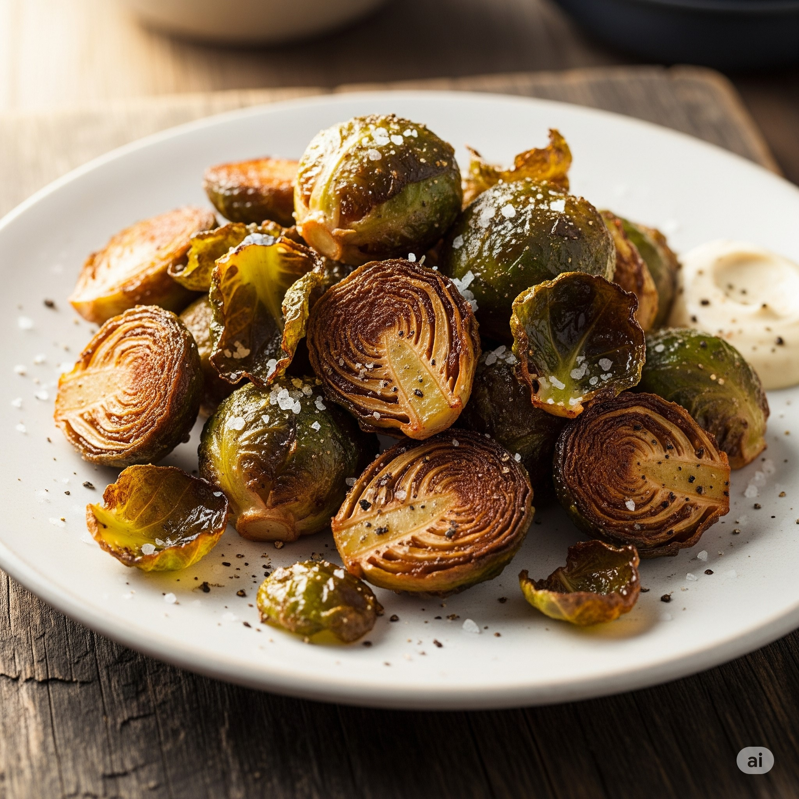

Home
Fried Brussels Sprouts

Description
Brussels Sprouts, when done properly, are the most delicious
greens out there. If you haven't tried them, this dish is the best way
to do it.
Ingredients
- 125 gr granulated sugar
- 125 ml white distilled vinegar
- 125 ml soy sauce
- 60 ml fish sauce
- 60 ml fresh orange juice
- 5 cm fresh ginger, peeled and grated
- 2 fresh serrano chilies, thinly sliced.
- 11 gr cornstarch
- 25 ml filterde water
- 4 cloves garlic, finely chopped
- High heat oil, for frying
- 450 gr brussels sprouts, halved or quartered according to size
- salt
- frsh lemon juice, to taste
Steps
- In a saucepan, mix sugar, vinegar, soy sauce, fish sauce, orange juice,
ginger and chilies. Heat over medium high, stirring ocasionally until it boils
for 3 to 5 minutes.
- While the sauce is boiling, in a small container, mix the water (room temp or cold) with
the cornstarch to create a slurry.
- Add the slurry to the boiling sauce, mixing well to aovid clumps, and let
it boil for 1 to 2 more minutes or until tickened. Remove from heat and add
the garlic. Wait 5 minutes and strain to remove the solids.
- In a heavy-bottomed pot, pour the oil until it reaches a little down the half.
Heat the oil until it reaches 180°C.
- Carefully add about a cup of brussels sprouts to the hot oil (watch out for splashes).
Fry fro 7 minutes or until golden brown and crisp. Remove them and place them
in a heat proof container.
- When serving, dress the fried brussel sprouts with a generous amount os sauce,
season lightly with salt and a squeeze lemon juice.